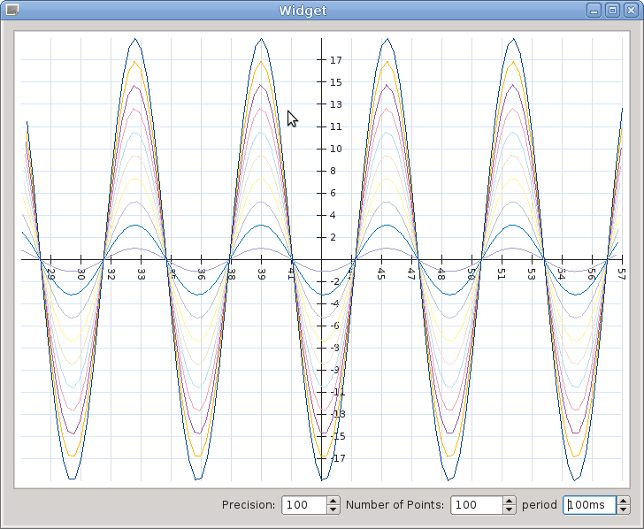
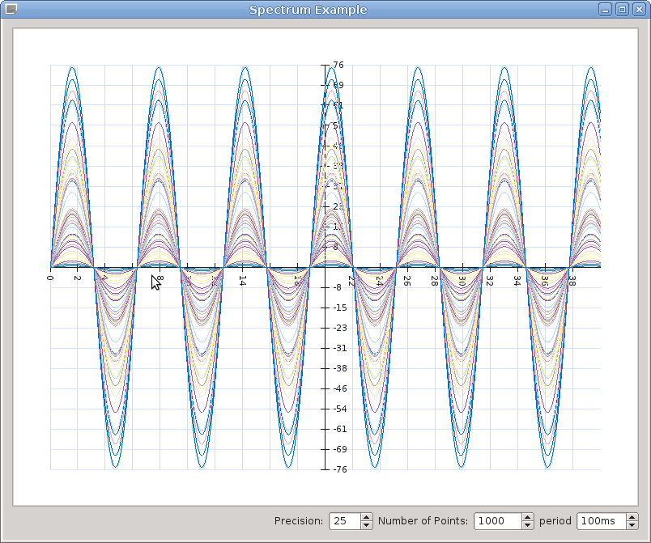

The main class that contains the plot canvas.This library can draw curves on a plot canvas. Each curve is represented by a SceneCurve. A SceneCurve contains the data of the curve. The SceneCurve is not responsible for drawing its shape. Each SceneCurve must be given a name and added to the plot by means of PlotSceneWidget::addCurve
The painting takes place by a CurveItem object constructed by passing a SceneCurve to it and by an implementation of an ItemPainterInterface which must be installed on a CurveItem.
The ScaleItem class represents an axis scale. More than a couple of axes may be added to the plot. AxesManager class is responsible of coupling and managing the axes.
The TargetItem item is a QGraphicsObject that can be moved over the plot and it is aimed at realizing writers.
Readers that want to draw curves on the plot have to conform to the XYPlotInterface interface that the PlotSceneWidget implements.
In the examples directory you will find some examples of the usage of the library.
- Examples
- Scalar plot
- see directory examples/scalar 
- Spectrum plot
- see directory examples/spectrum/ 
- Aging circles
- see directory examples/agingcircles
- Using external scales
- External scales can be used and they can be useful when the plot is zoomed and the plot internal axes fall out of the zoom area. You can find an example in the directory examples/externalscales
- See also
- ExternalScaleWidget

- Properties and settings
- Each QObject (in particular QGraphicsObject for the items in a plot) can export its relevant properties through a set of Q_PROPERTY declarations. These properties are then taken into account at runtime and the most important types of properties can be modified and saved. Each object will display its properties under a page of a tab widget. To register QObject's properties, the object must have an objectName and you must provide a settings key through the setSettingsKey method call, passing a string as a key for the properties of your objects to be saved by the QSettings class. Normally, you want to pass the application name as settings key.
- Note
- Since version 2.2.2, Qt dynamic properties directly set on QObjects with setProperty are taken into account and made available by the configuration dialog.
- Dynamic properties starting with two underscores "__" are reserved and do not have to be used.
- Since dynamic properties are expected to be application specific, their names are put in evidence by means of a bold font in the configuration dialog.
Each configurable object must then be registered with the addConfigurableObjects method call, passing the name of the tab in the tab widget for the object and a reference to the object itself.
- Position of the axes
- The axes are placed by PlotSceneWidget through the classes AxesManager and AxisCouple. Each AxisCouple in the PlotSceneWidget represents a couple of axis, one with Horizontal orientation and the other with Vertical orientation. The default positioning of the axes is done by default such as each the axes cross each other in the middle. If you want to change the reciprocal axes position, see PlotSceneWidget::setOriginPosPercentage PlotSceneWidget::setDefaultXAxisOriginPosPercentage and PlotSceneWidget::setDefaultYAxisOriginPosPercentage.
The code above produces the effect of placing the scales as in the scalartime example in the examples folder. Here you can see a screenshot of the scalartime example
In the scalartime example, the time labels in the x axis have been realized by installing a TimeScaleLabel on the x axis:
- See also
- TimeScaleLabel
- installScaleLabelInterface
- ScaleLabelInterface
To customize x or y scale labels, have a look to ScaleLabelInterface. You must subclass that interface and provide a ScaleLabelInterface::label method implementation.
- Implementation notes
- PlotGeometryEventListener and MouseEventListener interfaces can benefit from PlotSceneWidget notifications when the geometry of the plot changes (see PlotGeometryEventListener) or the mouse is clicked/moved/pressed/released on a certain point (see MouseEventListener). installMouseEventListener and installPlotGeometryChangeListener methods can be used by any class implementing the MouseEventListener and PlotGeometryEventListener interfaces in order to register for the corresponding events.
Other relevant changes taking place in the PlotSceneWidget are notified by means of Qt signals. For example, signals are emitted when a new curve is added or removed or an axis is removed. Appropriate signals are also emitted when the area of the plot changes (taking into account the currently applied transform matrix) and when the plot rect changes.